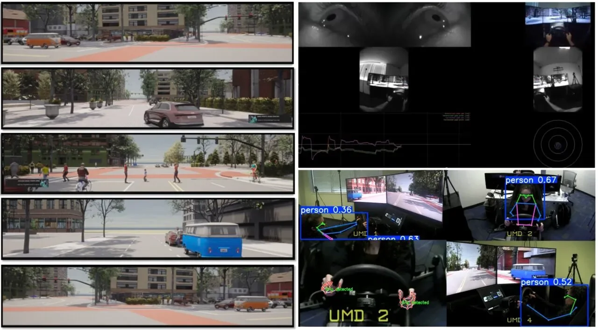
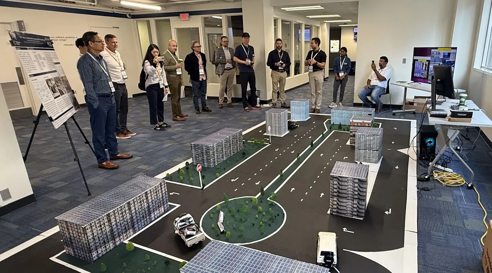

Research
My research interests are edge-AI deployment, autonomous vehicle safety, pedestrian behavior modeling, cooperative driving automation, computer vision for transportation, assistive technology, and digital twins for smart cities.
-
Driver and pedestrian attention allocation
Characterizing how drivers and pedestrians allocate visual attention during conflict events, instrumented with AI-equipped glasses for naturalistic gaze capture. Ensemble models quantify the contribution of ambient lighting, intersection complexity, and traffic density to attention allocation, with the objective of producing human-behavior benchmarks against which autonomous vehicle planners can be evaluated.
-
Predicting driver distraction
Predicting the onset of driver distraction early enough to warn the driver before it becomes dangerous. The models fuse seating posture, facial expression, steering-wheel grip and eye movement with road context such as intersection type, weather and the presence of pedestrians. Participants drive an instrumented simulator fitted with cockpit cameras and wearable sensors, on scenarios reconstructed from anonymized sensor data drawn from Chattanooga's smart corridor, which covers more than 100 signalized intersections. The intended deployment is a single dashboard camera paired with a small inference module that issues real-time alerts and logs incident data. Moving from the simulator to the live corridor requires domain adaptation across lighting, weather and driver variation.

-
PRISM: AI-powered platform for real-time intelligence in shared mobility
Dynamic map generation combining live environmental sensing with learned hazard prediction to support adaptive route planning and cooperative perception under changing road conditions. Selected as one of four finalists in the ARPA-I Ideas and Innovation Challenge from 448 submissions nationwide, and awarded third place with a $150,000 Stage 2 prize.
-
Cooperative driving automation testbed
A 1/10th-scale, high-fidelity connected and automated vehicle platform for cooperative driving research, running V2X communication stacks, cooperative perception algorithms, and platooning protocols. The testbed is built to bridge the simulation-to-reality gap, supporting multi-vehicle coordination experiments that are infeasible to instrument at full scale.

-
Real-time traffic safety analysis
Keypoint and dense-pose estimation models for pedestrian crossing-intention prediction, and a parallel dense video captioning framework for end-to-end traffic safety event analysis. The captioning system placed sixth in Track 2 of the NVIDIA AI City Challenge at CVPR 2024, with a score of 29.01.
-
Autonomous vehicle and pedestrian interaction modeling
A transformer-based trajectory prediction model trained on more than 1,500 hours of nuPlan driving data, reducing displacement error to 2.07 m against a 5.89 m baseline. A companion multi-agent inverse reinforcement learning platform simulates vehicle-pedestrian conflict resolution across Boston, Las Vegas, Pittsburgh, and Singapore, predicting evasive maneuvers including swerving and braking at 81 to 84 percent accuracy. Cross-city comparison identified Las Vegas as the most adversarial interaction environment and Singapore the most cooperative.
-
Interactive traffic prediction platform
A graph convolutional gated recurrent unit architecture for network-level traffic forecasting from connected vehicle data, with GPU-accelerated ETL pipelines built on RAPIDS achieving a 50-fold throughput improvement on Missouri's statewide dataset. The platform includes NOCONS, a speech-driven web application through which planners visualize and query predicted congestion states by voice.
-
Transportation network companies and urban mobility
Quantifying the effect of ride-hailing services on mode choice in Munich, using a stated-preference survey of 500 respondents and agent-based simulation in MATSim. Larger fleet sizes reduced passenger wait times without a corresponding increase in trip duration, while smaller fleets operated more efficiently under peak demand.